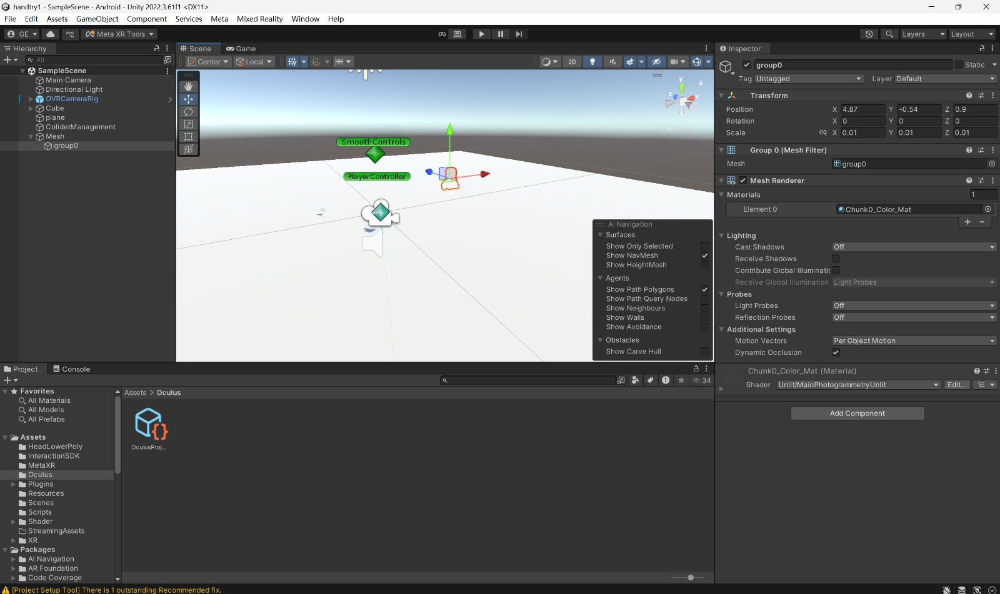
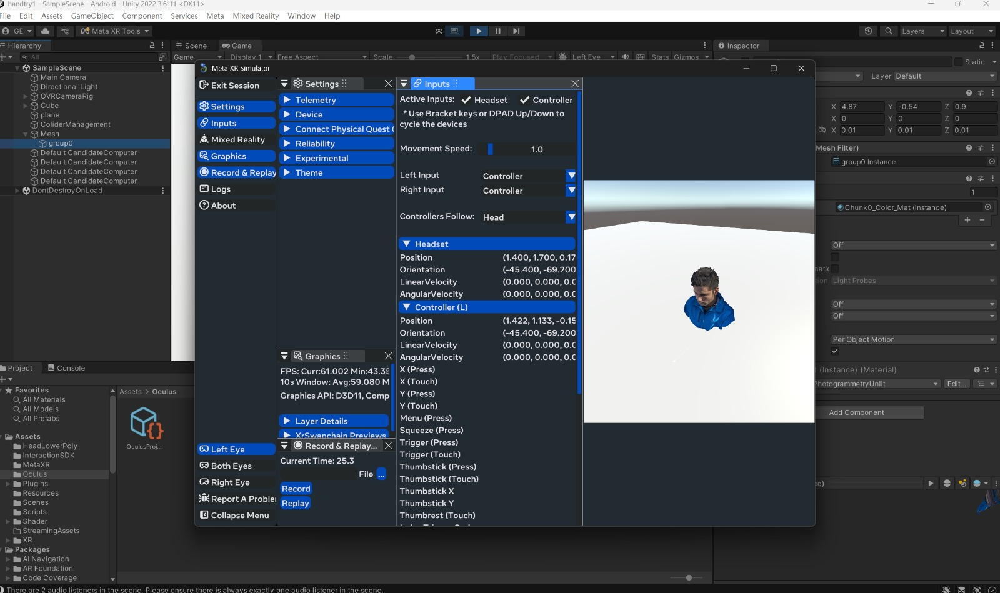

VR Hand Interative Deformation Project
Team: 31
Names: Yun Chung Chang, Jason Du, Panfeng(gavin) Jiang, Zitong (Peter)
Hu
Link to webpage:
Link to GitHub repository:
Final Deliverables Website
Our Code Base (switch to master branch if you see nothing)
Link to Slides:
Link to Videos:
Abstract
The VR Deformation project aims to develop a real-time, interactive mesh
deformation system for virtual reality environments. By enhancing
immersion through dynamic, responsive mesh modifications, we seek to
explore novel ways users can interact with and manipulate virtual objects
directly via hand tracking or controller inputs.
Technical Approach
Custom Shader-Based Deformation: Leverages GPU-powered shaders to compute
and render mesh deformations at high performance without modifying the
underlying mesh data on the CPU.
|

Interactive Demo setup in Unity
|

Interactive Object Mesh
|
Results
References